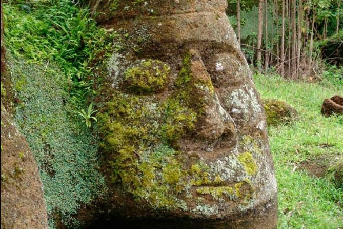
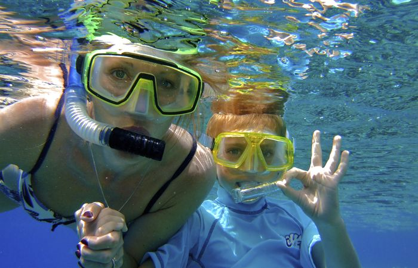
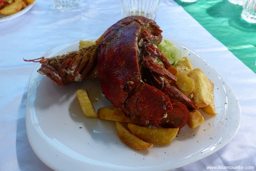

Que font-ils bien?
Il n'y a pas si longtemps, les îles Galapagos ont été déclarées site du patrimoine mondial en péril par l'UNESCO - en raison d'une combinaison de facteurs, notamment la croissance rapide du tourisme de croisière dans les îles et l'absence de réglementation sur les aires protégées. Le gouvernement équatorien n'a pas tardé à réagir et aujourd'hui, les Galapagos ne sont plus inscrites sur la liste du patrimoine mondial en péril, résultat de politiques de gestion plus strictes basées sur des directives de tourisme durable et un meilleur suivi de la conservation. Parmi les exemples, citons les entreprises de voyage qui se sont réunies pour créer la première station de recyclage des déchets des Galapagos, et l'introduction de petits navires exploitant des bateaux respectueux de l'environnement utilisant des systèmes de panneaux solaires à énergie hybride, entre autres initiatives de durabilité.

Excursion sur l'île Floreana
Nous viendrons vous chercher à votre hôtel pour vous amener monter sur un yacht à Puerto Ayora, qui vous conduira directement à Floreana, une des îles habitées des Galápagos.
L'île de Floreana a une histoire passionnante. Des baleiniers, des pirates et une famille singulière ont fait la renommée de ce lieu, en plus de nombreuses autres légendes. Une fois arrivés à Floreana, nous visiterons certains des endroits les plus intéressants de l'île, comme la Cueva del Pirata (la grotte des pirates).
Au fur et à mesure que nous marchons à travers Floreana, nous vous révèlerons peu à peu les légendes de cette île.
La forêt de Scalecias ou le parc national des Galápagos feront également partie de l'excursion. Ici, vous pourrez observer les tortues des Galápagos dans leur habitat naturel.

Plongée en apnée
Un point culminant pour de nombreux visiteurs des îles Galapagos, la plongée en apnée est l'occasion de se familiariser avec la faune des mers. Contrairement à la plongée sous-marine, vous n'avez besoin d'aucune formation ou expérience pour faire de la plongée avec tuba, cependant, en raison de la nature de l'océan Pacifique et des courants autour des îles, ainsi que des considérations de conservation pour les récifs et leurs habitants, vous serez informé en détail avant le activité.
Il est recommandé de faire de la plongée avec un «copain» ou un groupe et d'apporter une caméra sous-marine pour prendre des photos de tortues vertes, du plus petit pingouin du monde et de magnifiques poissons de récif.

les spécialités de la cuisine des îles Galápagos
La cuisine des Galápagos compte néanmoins quelques spécialités succulentes, comme le ceviche, une salade de poissons ou de fruits de mer marinés dans des épices et du jus de citron. Les poissons y sont aussi très souvent mijotés dans du lait de coco. Enfin, les habitants raffolent des empanadas, des petits chaussons garnis de viande ou de légumes.
De manière générale, la cuisine des îles Galápagos se rapproche fortement de celle de l’Équateur. Les mets qui y sont dégustés sont communs à beaucoup de pays d’Amérique du Sud.